自分だけの LoRA
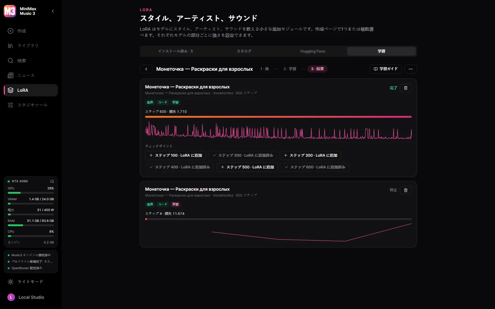
同じアーティストやスタイルの曲から、HOT-Step のトレーナーとレシピで LoRA を自分の GPU で学習。
MiniMax Music3 のための Windows デスクトップスタジオ。
Windows 10/11 x64 と NVIDIA のカード（GTX 900 シリーズ以降）が必要です。モデルはスタジオ内から、あなたが決めたときにだけダウンロードされます。
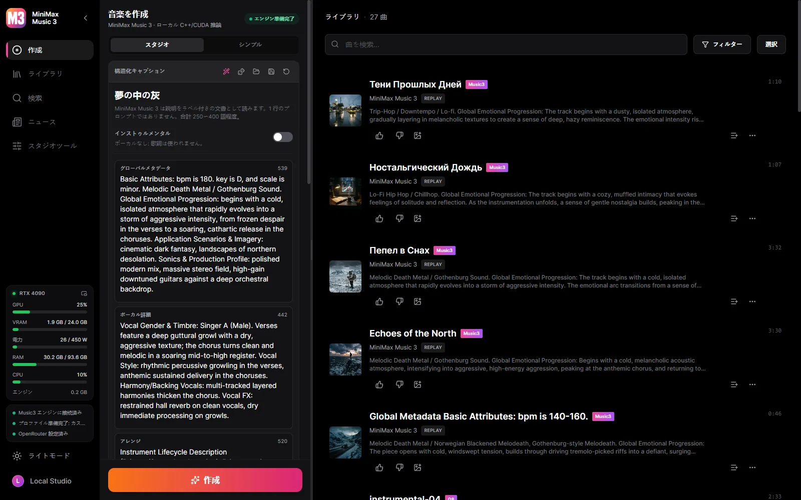

同じアーティストやスタイルの曲から、HOT-Step のトレーナーとレシピで LoRA を自分の GPU で学習。
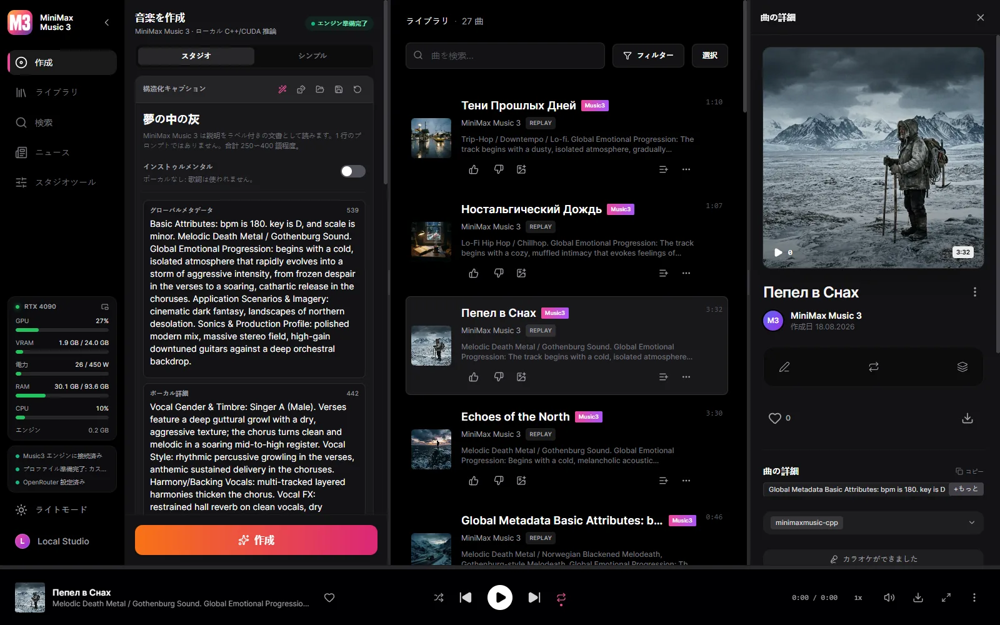
単語ごとのタイムスタンプを持つ Enhanced LRC。
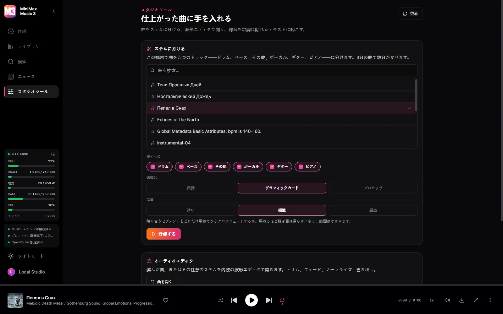
ドラム、ベース、その他、ボーカル、ギター、ピアノの 6 トラックを HT-Demucs が GPU で分離します。
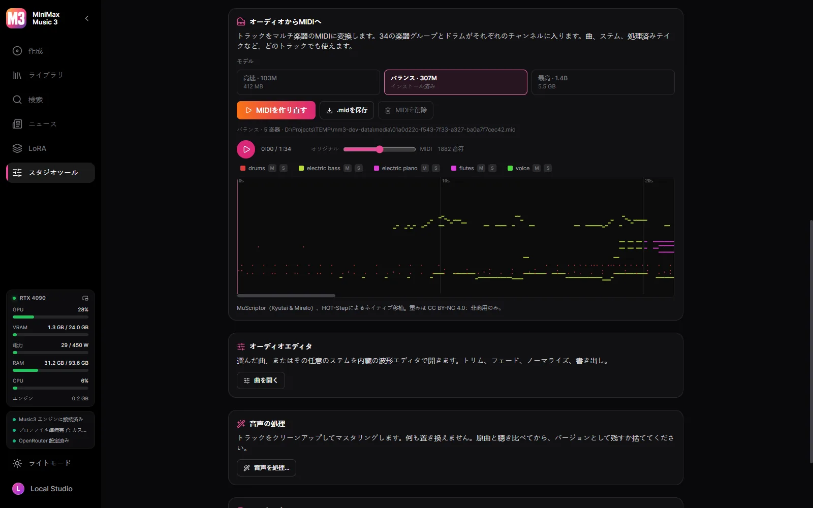
曲、ステム、処理済みテイクを、GPU 上の MuScriptor がマルチ楽器の MIDI（34 の楽器グループとドラム）に変換します。

Winamp の周波数による 10 バンドイコライザー（プリセットと .EQF ファイル）、数百のプリセットを持つ MilkDrop または 10 種類のスペクトラム、そして各ウィンドウを切り離し・ドッキング・リサイズできる Winamp モード。
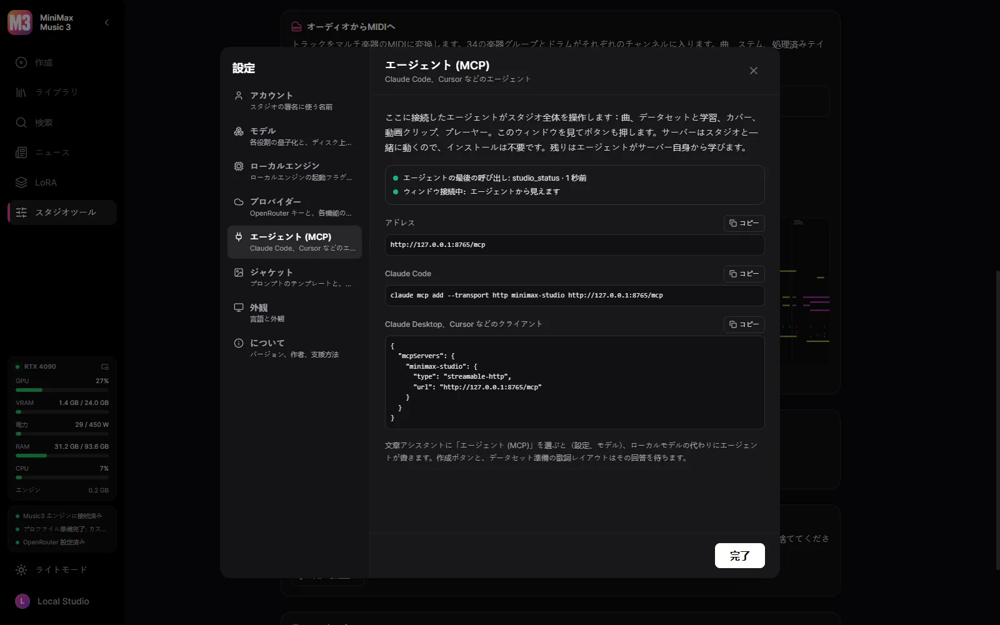
Claude Code、Claude Desktop、Cursor をつなぐと、エージェントがスタジオでできることをすべて行います。
スタジオそのものを、あなたの言語で。
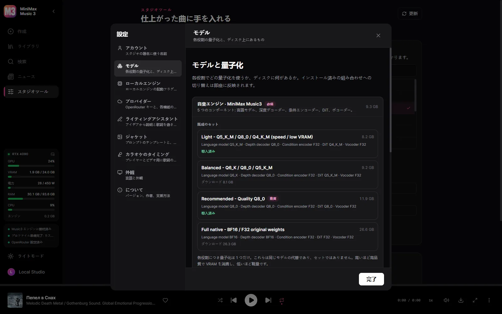
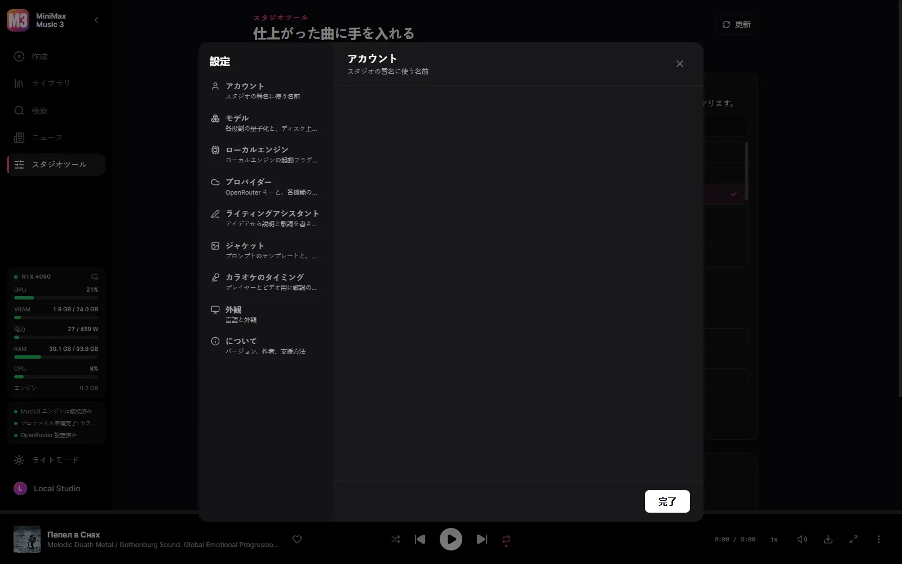
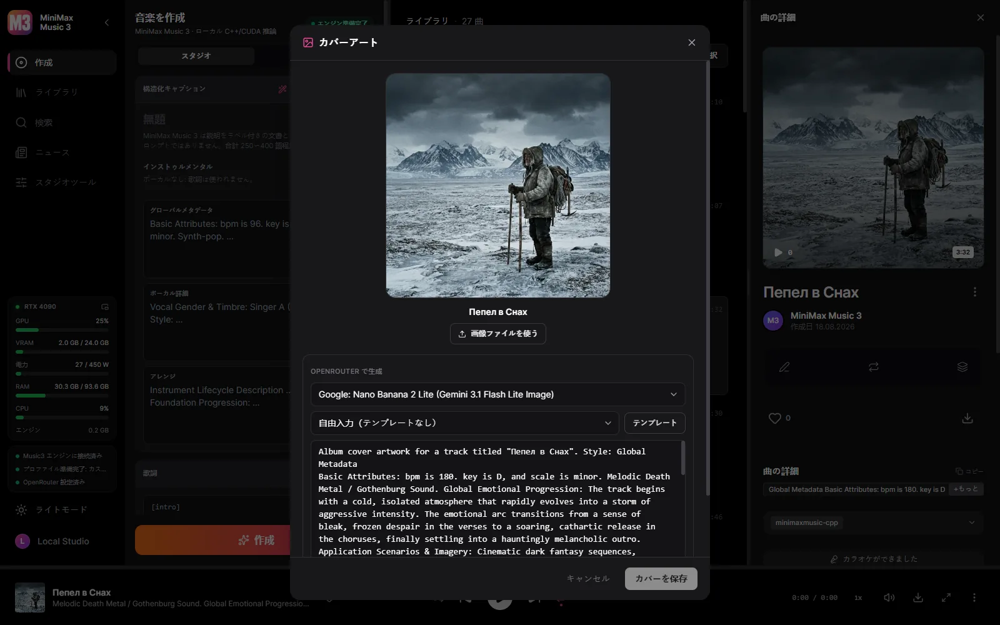
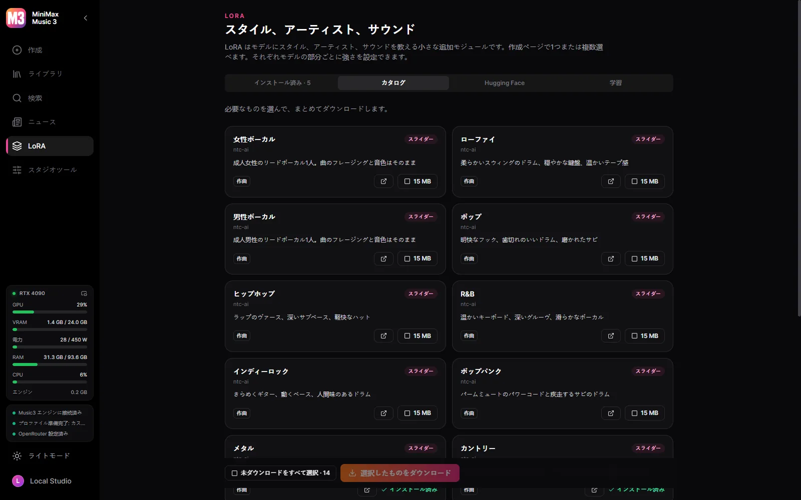
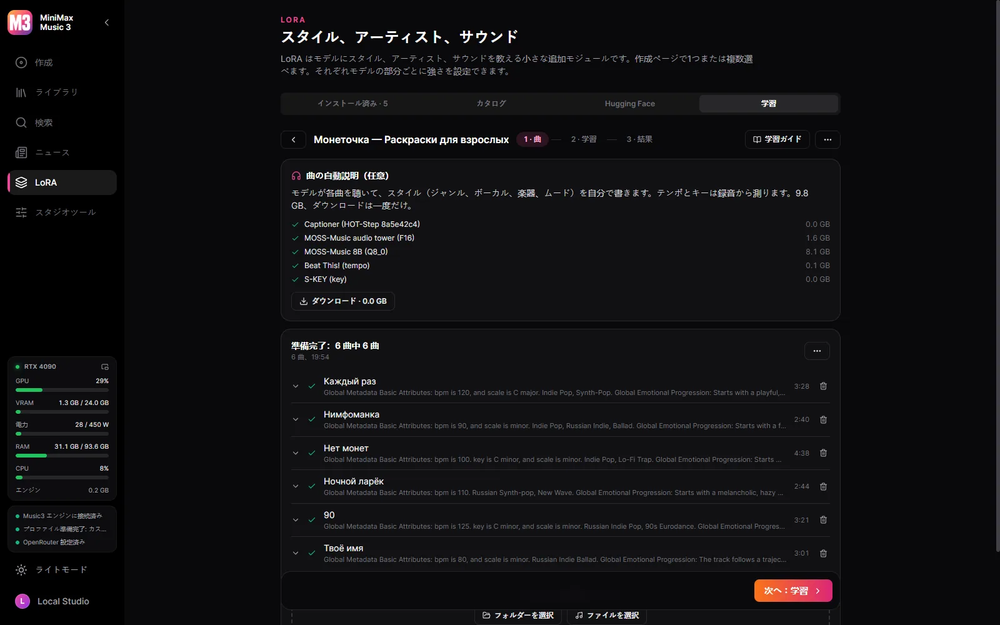
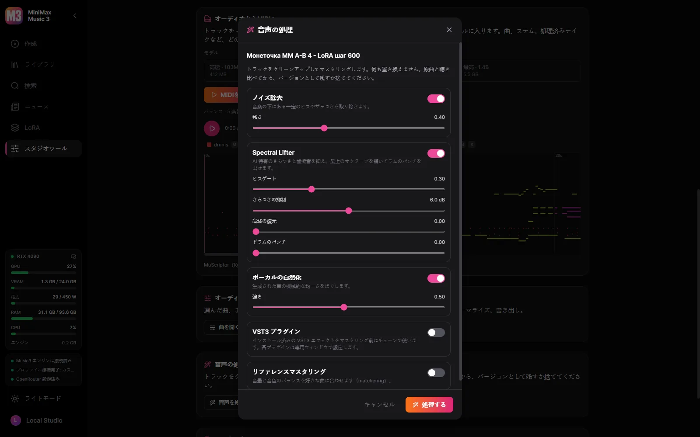
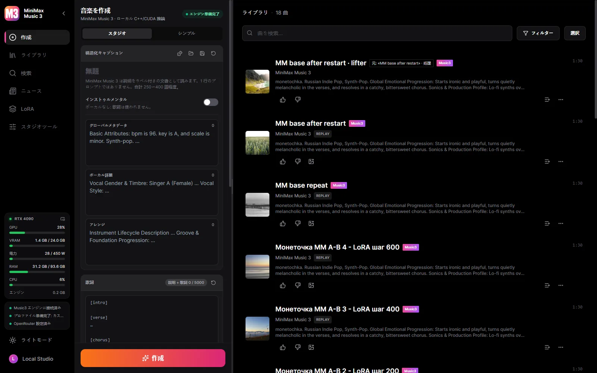
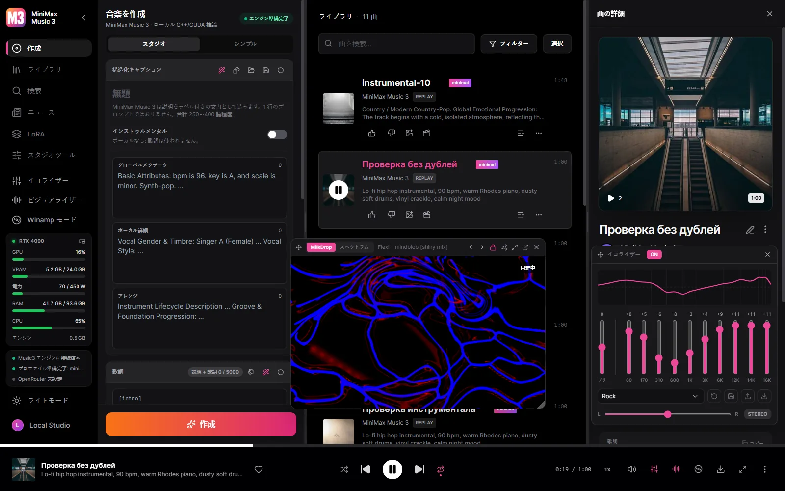
Windows 10/11 x64 と NVIDIA のカード（GTX 900 シリーズ以降）が必要です。モデルはスタジオ内から、あなたが決めたときにだけダウンロードされます。
動作する Music3 の構成は常に五つ：言語モデル、RVQ デプスデコーダ、コンディションエンコーダ、DiT、ボコーダ。
| GPU | プロファイル | ダウンロード |
|---|---|---|
| 30 GB+ | Full Native — BF16 / BF16 / F32 | 28.6 GB |
| 15 GB+ | Q8 Quality | 12.8 GB |
| 11.5 GB+ | Balanced — Q6 / Q8 / Q5 | 9.8 GB |
| 9.5 GB+ | Light — 速度と省 VRAM 重視 | 7.7 GB |
| 8 GB | Minimal — Q3、8 GB カード向け | 6.5 GB |
スタジオはカードを検出し、実際に動くプロファイルをあらかじめ選びますが、ダウンロードするかどうかは常にあなたの判断です。各ファイルは固定した Hugging Face のリビジョンとハッシュ照合され、中断したダウンロードは途中から再開します。
はい。スタジオは無料のオープンソースで、モデルもスタジオ内から無料でダウンロードできます。
要するに、あなたの音楽はあなたのもので、ディスクから出ていきません。
このスタジオはオープンソースです。MiniMax Music3 の重みは独自のコミュニティライセンスに従い、商用利用では MiniMax-Music3 の名称表示とライセンスが求める安全対策が必要です。
同じアーティストやスタイルの曲から、HOT-Step のトレーナーとレシピで LoRA を自分の GPU で学習。設定はすべて変更でき、データセットはこのスタジオと YuE2 Studio の間で移せます。
Claude Code、Claude Desktop、Cursor をつなぐと、エージェントがスタジオでできることをすべて行います。曲を書いて生成し、データセットを整えて学習し、カバーを描き、動画エディタでクリップを作り、曲を再生し、ウィンドウを見てボタンを押します。MiniMax 公式のキャプションのルールが付属するので、キャプションと歌詞はエージェント自身が書きます。 作詞アシスタントに選べば、ローカルモデルの代わりにエージェントが書きます。
既定ではすべてローカルです。クラウドの鍵はあなたが、選んだ機能のためだけに追加し、いつでも外せます。
| 構成要素 | 実行場所 | サイズ |
|---|---|---|
| MiniMax Music3 エンジン（minimaxmusic.cpp） | あなたの GPU、CUDA | 同梱 |
| Music3 モデルセット — 5 コンポーネント | あなたの GPU | 6.5〜28.6 GB |
| カラオケのタイミング — Parakeet または Whisper | あなたの PC | 任意のダウンロード |
| ステム分離 — HT-Demucs、6 ステム | GPU または CPU | 136 MB |
| 作詞・説明アシスタント | ローカル GGUF か OpenRouter | お好みで |
| カバーアート | OpenRouter の画像モデル | クラウドのみ |
| 動画書き出し — ffmpeg | あなたの PC | 同梱 |
| LoRA 学習 — HOT-Step ace-train | NVIDIA RTX 30 以降、VRAM 22 GB | 10.5 GB、任意 |
| 曲を聴いて説明 — MOSS-Music-8B | VRAM 約 12 GB | 10 GB、任意 |
| VST3 ホスト — HOT-Step | あなたのマシン、独立したプロセス | 同梱 |
| オーディオから MIDI — MuScriptor（HOT-Step ace-midi） | NVIDIA GTX 16 / RTX 20 以降 | 0.5–5.6 GB、任意 |
サービスはデスクトップのバイナリに組み込まれ、C++ エンジンを監督します。アプリを閉じれば、起動したものはすべて一緒に終了します。
React UI ─┐
├─ MiniMax Music3 Studio.exe (window + native service)
Rust axum ┘ │
└─ minimaxmusic.cpp `mm-server` (C++/CUDA, GGUF)